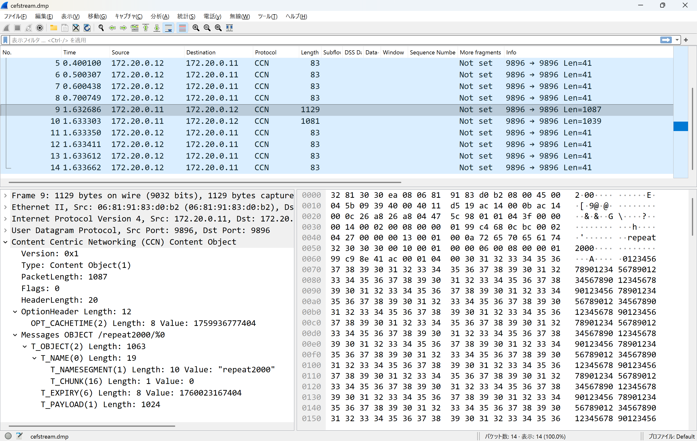
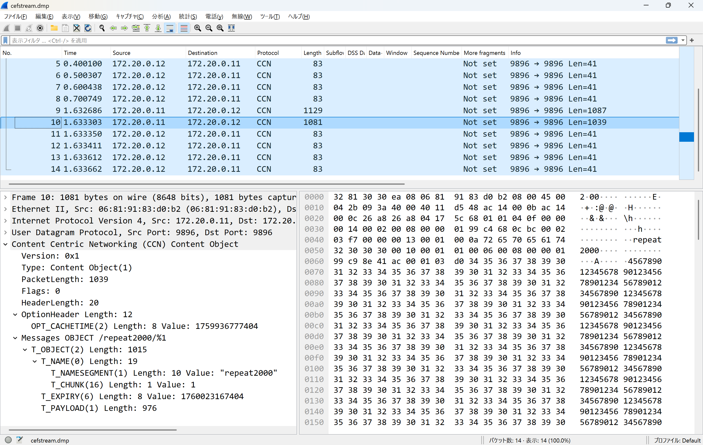
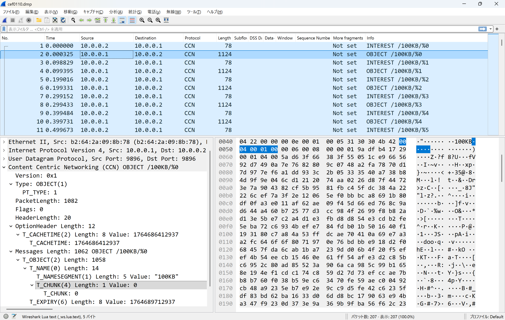
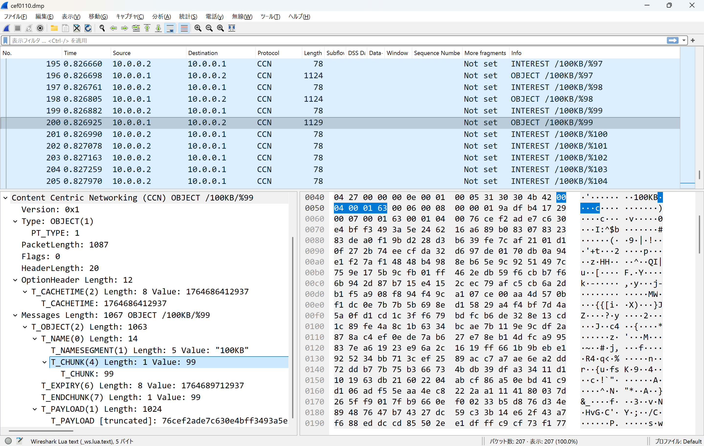
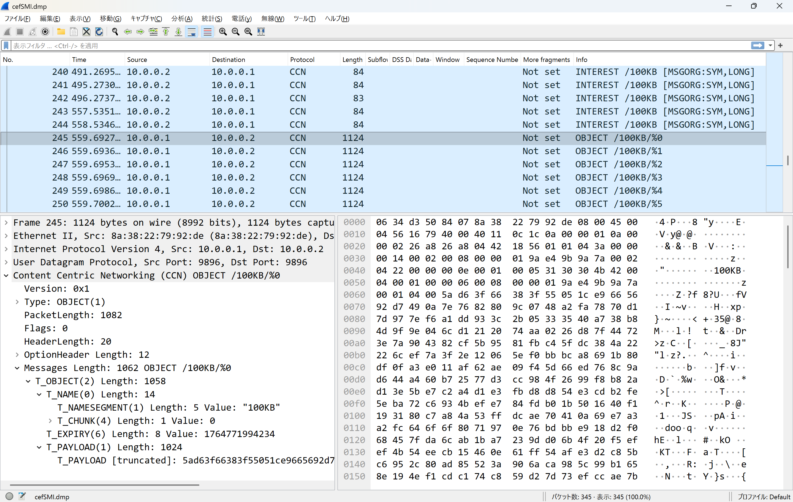
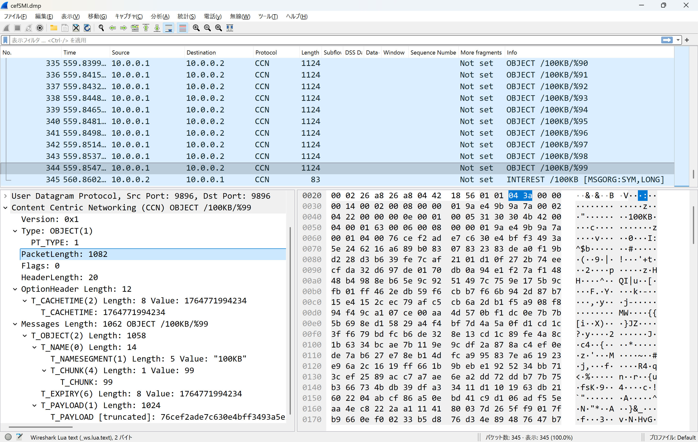

cefputstream/cefgetstream
Ceforeにおいて、cefputfileやcefgetfileがファイルという終端のはっきりしたデータを扱うのに対し、連続的に送出するストリームを対象としたコマンドとしてcefputstreamとcefgetstreamが用意されています。
cefputstreamでは標準入力から入って来たデータを順にCCNxコンテンツオブジェクトに変換していきます。本来はffmpegなどで生成した動画ストリームを入力するのですが、ここでは動作を確認するためにファイルからcatで流し込んでみましょう。具体的には以下のサンプルのようになります。ここではcefgetstreamを後から起動してもよいように、わざと有効期間を長めに（-eと-tオプション）設定しています。動画の入力ではしばらくのあいだ起動したままにするコマンドですが、この例ではファイル終端までcatしてすぐに終わってしまいます。
cat /home/vagrant/work/repeat2000.txt | cefputstream ccnx:/repeat2000 -e 86400 -t 86400入力されたCCNx URI（ここではccnx:/repeat2000）をストリームとして受信するにはcefgetstreamコマンドを使います。一般的な想定としてはffplayなどの動画再生ツールに流し込むのですが、ここでは説明しやすいようにファイルに書き込むことにします。この場合、cefgetfileと同じような機能になります。具体的なコマンド例としては以下になります。
cefgetstream ccnx:/repeat2000 > /home/vagrant/work/output.datこのときCefore間でやりとりされるCCNxパケットをキャプチャした結果をWiresharkでみていきます。
最初のチャンク
2000バイトのペイロードを1024バイトのチャンクで送るので、コンテンツオブジェクトは2個分になります。キャプチャ結果では1個目のチャンクを表示しています。cefputfile / cefgetfile でのやりとりと同じコンテンツオブジェクトが送られていることがわかります。
最後のチャンク
2個目のチャンクをキャプチャした結果です。基本的に cefputfile / cefgetfile のやりとりと同じですが、ひとつだけ異なるところがあります。実は T_ENDCHUNK が含まれていないのですね。したがって cefgetfile で取得しようとするとエラーになりますが、cefgetstream であればここまで取得したあとでタイムアウトするので、ファイルに書き込まれたデータはcefputstreamに流し込んだファイルの内容と同じになります。
補足： cefputstream / cefgetstream については後で述べる Symbolic Interest と組み合わせると、本来なら動画ファイルのサイズに比例して増えてしまうInterestの数を削減できます。
Cefore0.11.0とそれ以前の仕様の違い
先に述べたようにCefore 0.11.0 は Cefore 0.10.0gなどの過去のバージョンとは相互通信ができません。これはチャンクタイプやエンドチャンクタイプのコードが異なるからです。これらのバージョンが準拠しているinternet-draftは以下の通りです。
0.10.0g
draft-mosko-icnrg-ccnxchunking-02
+--------+---------+-----------------+------------------------------+ | Type | Abbrev | Name | Description | +--------+---------+-----------------+------------------------------+ | %x0010 | T_CHUNK | Chunk Number | The current Chunk Number, is | | | | (Section 3.1.1) | an unsigned integer in | | | | | network byte order without | | | | | leading zeros. The value of | | | | | zero is represented as the | | | | | single byte %x00. | +--------+---------+-----------------+------------------------------+ Table 1: Name Types +--------+------------+-----------------+---------------------------+ | Type | Abbrev | Name | Description | +--------+------------+-----------------+---------------------------+ | %x000C | T_ENDCHUNK | EndChunkNumber | The last Chunk number, as | | | | (Section 3.1.1) | an unsigned integer in | | | | | network byte order | | | | | without leading zeros. | | | | | The value of zero is | | | | | represented as the single | | | | | byte %x00. | +--------+------------+-----------------+---------------------------+ Table 2: Content Object Types
0.11.0
+========+=========+==========+==================================+ | Type | Abbrev | Name | Description | +========+=========+==========+==================================+ | %x0004 | T_CHUNK | Chunk | The current Chunk Number, is an | | | | Number | unsigned integer in network byte | | | | (Section | order without leading zeros. | | | | 3.1) | The value of zero is represented | | | | | as the single byte %x00. | +--------+---------+----------+----------------------------------+ Table 1: ChunkNumber +========+==============+================+========================+ | Type | Abbrev | Name | Description | +========+==============+================+========================+ | %x0007 | T_ENDCHUNK | EndChunkNumber | The last Chunk number, | | | | (Section 3.2) | as an unsigned integer | | | | | in network byte order | | | | | without leading zeros. | | | | | The value of zero is | | | | | represented as the | | | | | single byte %x00. | +--------+--------------+----------------+------------------------+ | %x000F | T_CHUNK_SIZE | ChunkSize | The fixed payload size | | | | (Section 3.2) | of user data upto the | | | | | last chunk. It must | | | | | be a positive integer. | +--------+--------------+----------------+------------------------+ Table 2: EndChunkNumber
最新仕様について
参考までにinternet-draftの最新版の仕様はCeforeに未適用です。
https://datatracker.ietf.org/doc/html/draft-irtf-icnrg-ccnxchunking-02
CCNx Name Segment Type Namespace
Code Type name ============== =============================== %x0000 Reserved [RFC8609] %x0001 T_NAMESEGMENT [RFC8609] %x0002 T_IPID [RFC8609] %x0003 T_NONCE [RFC9508] %x0004 T_VERSION [I-D.ccnxcversioning] %x0005 T_CHUNK %x0006-%x000F Unassigned %x0010-%x0013 Reserved [RFC8609] %x0014-0x0FFE Unassigned %x0FFF T_ORG [RFC8609] %x1000-0x1FFF T_APP:00 - T_APP:4096 [RFC8609] %x2000-0xFFFF Unassigned Figure 1: CCNx Name Segment Type Namespace
引用したFigure 1より、T_VERSIONが4番に入ったため、T_CHUNKは5に移動したようです。
CCNx Message Type Namespace
Code Type name ============== =================== %x0000 T_NAME [RFC8609] %x0001 T_PAYLOAD [RFC8609] %x0002 T_KEYIDRESTR [RFC8609] %x0003 T_OBJHASHRESTR [RFC8609] %x0005 T_PAYLDTYPE [RFC8609] %x0006 T_EXPIRY [RFC8609] %x0007 T_ENDCHUNK %x0008 T_CHUNK_SIZE %x0009-%x000C Reserved [RFC8609] %x000D T_DISC_REQ [RFC9344] %x000E T_DISC_REPLY [RFC9344] %x0FFE T_PAD [RFC8609] %x0FFF T_ORG [RFC8609] %x1000-%x1FFF Reserved [RFC8609] Figure 2: CCNx Message Type Namespace
引用したFigure 2より、T_ENDCHUNK は最新仕様でも7番のままですが、T_CHUNK_SIZEが8番に変更になっています。
バージョン別のコード値
0.10.0gでのコード値
- T_CHUNK: 16
- T_ENDCHUNK: 12
0.11.0でのコード値
- T_CHUNK: 4
- T_ENDCHUNK: 7
- Cefore 0.10.0g対応: cefore.lua
- Cefore 0.11.0対応: wireshark4cefore.lua
それぞれ仕様が異なるので、Wiresharkでキャプチャする場合も対応するLUAファイルを利用する必要があります。
Wireshark用LUAファイル
実際のパケット確認
これを実際のパケットで確認しましょう。Cefore 0.11.0 で発行されるCCNxパケット（content object）をキャプチャした結果を見ていきます。
最初のチャンクのキャプチャ
こちらが最初のチャンクであり、T_CHUNKをみると確かに4になっていることがわかります。
最後のチャンクのキャプチャ
こちらが最後のチャンクのキャプチャ結果です。T_CHUNKに加えてT_ENDCHUNKが含まれており、これも確かに7になっています。
NICT独自拡張のSMI (Symbolic Interest)
Ceforeを開発しているNICTではCCNxの独自拡張としてSymbolic Interestを提案し、Ceforeに実装しています。Symbolic Interest、略してSMIは通常のInterest (Regular Interest: RGI) と異なり、多くのチャンクで構成されているコンテンツであってもチャンク番号を指定せずにコンテンツを要求します。これは多くのチャンクから構成されているサイズの大きなファイルの取得において、Interestの数を削減する効果が期待できます。
SMIの発行方法
それではSMIを発行してみましょう。ツールのヘルプなどには出てこないのですが、cefgetfileやcefgetstreamに -z オプションで有効期間をつけることでSMIを発行できます。
cefgetfile ccnx:/100KB -f /home/vagrant/work/output.dat -z 2この例だと2秒の有効期間が設定されます。
-z オプションの詳細
Ceforeのコードを読むと -z をコマンドラインの最後に指定するとデフォルトの4秒が指定されるようです。これは後方互換性なのかよくわかりません。一方、-z sg という指定もあるのですが、atoi()で0に変換された結果、SGIのように個々のinterestに対するコンテンツを要求しないことを明示できるようです（RFC8609）。
SMIがpending interest tableに入っている状態でcontent objectが入ってくることでコンテンツが送信されます。
上記cefgetfileのSMIが発行中にcefputfileやcefputstreamを実行するようにしましょう。
cefputfile ccnx:/100KB -f /home/vagrant/work/100KB-file.datSMIのパケット構造
SMI (Symbolic Interest) のキャプチャ
SMIはNICTの独自拡張なので、T_ORGにより内容が記述されます。形式はRFC8609のOrganization-Specific TLVとして規定されています。以下とのT_ORGのフォーマットとの対応でそれぞれの値は次のようになります。
- Type: T_ORG (0xffff)
- Length: 7 (3 + value length (4))
- PEN[0][1][2] (Enterprise Number): 0x00c96c
- T_SYMBOLIC (0001)
- T_LONGLIFE (0002)
T_ORGフォーマット
1 2 3 0 1 2 3 4 5 6 7 8 9 0 1 2 3 4 5 6 7 8 9 0 1 2 3 4 5 6 7 8 9 0 1 +---------------+---------------+---------------+---------------+ | T_ORG | Length (3+value length) | +---------------+---------------+---------------+---------------+ | PEN[0] | PEN[1] | PEN[2] | / +---------------+---------------+---------------+ + / Vendor Specific Value / +---------------+---------------+---------------+---------------+
ここでIANAで指定されたNICTの番号 51564 (0xc96c)が指定されていることがわかります。
https://www.iana.org/assignments/enterprise-numbers/?q=51564
T_SYMBOLICでSMIを指定し、T_LONGLIFEでストリーミング用途に合うように通常のInterestより長い有効期間を指定しています。
SMIに対するContent Object
こちらがSMIに対するチャンク0のcontent objectをキャプチャした例です。特にSMIに対応するような特別な特徴はなく、チャンク0が要求されたときと同様のcontent objectが送信されています。
※Cefore0.11.0で実行しているので、T_CHUNKは4になっています。
SMIの効果
SMIなのでInterestが多数発行されることがないのが特徴です。Wiresharkの画面をみても、連続してcontent objectが送信されており、Interestが発行されていないことがわかります。%99までinterestなしで一気に送られてきていますね。このようにinterest発行の負荷を削減できるのがSMIのメリットです。
こちらも参考になります
Ceforeとその使い方については以下のリンク先も参考になると思います。